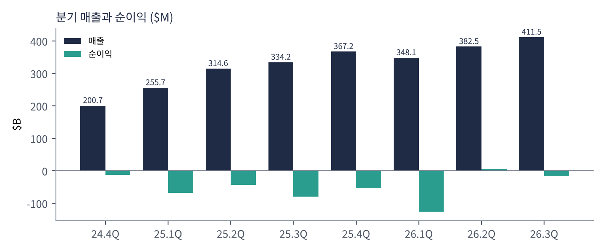
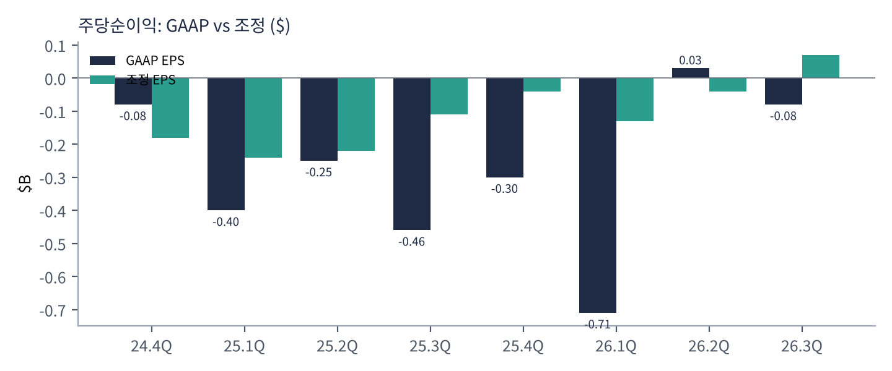
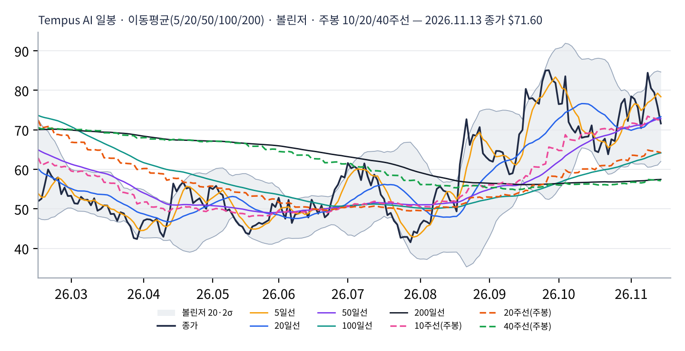
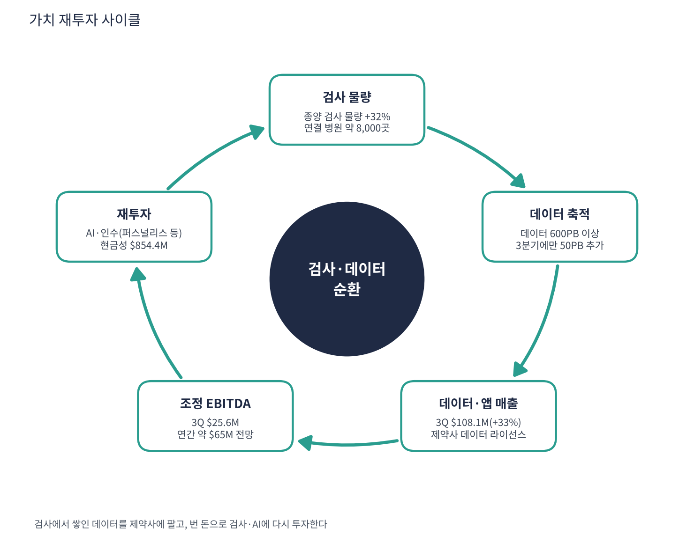

템퍼스 AI는 암 환자의 유전자 검사를 하고, 그 검사 데이터를 AI로 분석해 제약사에 파는 회사다. 연 매출은 약 $15.1억(TTM)이다. 검사 물량이 늘고 데이터 사업이 33% 커지며 조정 EBITDA가 흑자로 돌아섰지만, GAAP로는 아직 적자인 회사다.
| 항목 | 내용 |
|---|---|
| 종목 | Tempus AI (TEM) · NASDAQ · 정밀 의료·AI 진단 · 본사 미국 일리노이주 시카고 |
| 밸류에이션 | PER 적자 · P/S 9.12배 (11/13 종가 $71.60) |
| 최근 분기(3Q26) | 매출 $4.1억(+23%), GAAP 순손실 $0.1억, 조정 EBITDA $0.3억, 조정 EPS +$0.07 |
| 부문(3Q) | 진단 $3.04억(+20%, 종양 검사 물량 +32%), 데이터·응용 $1.08억(+33%) |
| 가이던스 | 2026 매출 $16.00~16.05억(상향, +25%), 조정 EBITDA 약 $0.65억 유지. 4Q 매출 $4.58~4.63억 |
| 현금·부채 | 현금·시장성 증권 $8.54억(회사), 총차입금 약 $14.3억(스캐너, 전환사채·리스 등 포함 여부 미확인) |
| 직책 | 인물 | 역할·특징 |
|---|---|---|
| CEO | 에릭 레프코프스키(공동창업자) | '3분기도 기록적인 분기였다'며 검사 물량 +32%, 데이터·응용 매출 +33%를 강조(8-K) |
| 확장 | M&A·제휴 | 퍼스널리스 인수(보도), BMS와 데이터 제휴(10월), 올해 데이터 라이선스 수주 $5.5억 초과(회사) |
경영 스타일: '검사로 데이터를 쌓고 그 데이터를 파는 이중 구조'. 3년 매출 성장률 약 25% 전망을 유지하면서 조정 EBITDA와 현금 흐름 흑자를 함께 만든다는 방침이다(회사). 주식보상($0.48억)과 인수 손실을 제외한 조정 지표라 GAAP 영업손실($0.57억)과의 차이를 봐야 한다.
암 검사에서 나온 유전·임상 데이터가 600PB를 넘었다(회사). 이 데이터를 제약사 연구와 AI 모델에 판다.
10만 개 전장 유전체와 임상 정보를 연결한 연구 플랫폼을 만들겠다고 밝혔다. 2028년 매출 $25억 이상을 제시한 적이 있다(보도).
| 분기 | 매출 | 순이익 | EPS | 조정 EPS | 특이 사항 |
|---|---|---|---|---|---|
| 2024.4Q | $2.0억 | -$0.1억 | -0.08 | -0.18 | 4분기 값 근사* |
| 2025.1Q | $2.6억 | -$0.7억 | -0.40 | -0.24 | |
| 2025.2Q | $3.1억 | -$0.4억 | -0.25 | -0.22 | |
| 2025.3Q | $3.3억 | -$0.8억 | -0.46 | -0.11 | 매출 +85% |
| 2025.4Q | $3.7억 | -$0.5억 | -0.30 | -0.04 | 4분기 값 근사* |
| 2026.1Q | $3.5억 | -$1.3억 | -0.71 | -0.13 | 매출 +36% |
| 2026.2Q | $3.8억 | $0.1억 | 0.03 | -0.04 | 2분기 순이익 흑자(투자 평가이익 영향 가능) |
| 2026.3Q | $4.1억 | -$0.1억 | -0.08 | 0.07 | 3Q 조정 EPS 흑자 전환, 조정 EBITDA $0.26억 |


* 4분기 값은 '연간 − 1~3분기 합' 근사치. EPS 열은 트레이딩뷰·스캐너 GAAP(희석) 기준이며 2024년 4분기 EPS는 연간 합산 시 주식수 차이로 SEC 단순 차이값(0.81)과 달라 스캐너 값을 썼다. 2026년 3분기 GAAP 순이익에는 시장성 주식 평가이익 $0.43억이 포함됐다(보도).
흐름 요약: 분기 매출은 $2.01억에서 $4.12억으로 두 배가 됐다. 순손실은 2026년 1분기 -$1.26억에서 3분기 -$0.15억으로 줄었고 조정 EPS는 3분기에 흑자로 돌아섰다. 영업이익은 -$0.57억(보도)으로 아직 적자다. 분기 설비투자는 구하지 못해 표에서 뺐다.
| 부문 | 3Q26 매출 | 비중(내 계산) | 전년 대비 |
|---|---|---|---|
| 진단 | $3.04억 | 약 74% | +20% |
| · 종양 | $1.73억 | 약 42% | +28%(물량 +32%) |
| · 유전성 암 | $1.11억 | 약 27% | +3% |
| 데이터·응용 | $1.08억 | 약 26% | +33%(인사이트 $0.89억) |
진단이 4분의 3이지만 성장은 데이터·응용이 더 빠르다. 진단 합계에서 종양과 유전성 암을 뺀 나머지는 약 $0.20억이다(내 계산). 지역별 비중은 구하지 못했다.
템퍼스는 '검사로 데이터를 만들고 데이터로 신약 개발을 돕는 플랫폼'이 되려 한다.
| 축 | 최근 움직임 |
|---|---|
| 검사 | 종양 검사 물량 +32%, 연결 병원 약 8,000곳 |
| 데이터 | 600PB 이상, 10만 전장 유전체 구축 계획 |
| 제약 협력 | BMS 제휴, 올해 데이터 라이선스 수주 $5.5억 초과 |
| 위험 | GAAP 적자, 특허·개인정보 소송(보도) |

| 이동평균 | 값 | 종가 대비 | 해석 |
|---|---|---|---|
| 5일선 | $78.38 | -8.7% | 현재가가 아래 |
| 20일선 | $73.33 | -2.4% | 현재가가 아래 |
| 50일선 | $72.84 | -1.7% | 현재가가 아래 |
| 100일선 | $64.17 | +11.6% | 현재가가 위 |
| 200일선 | $57.45 | +24.6% | 현재가가 위 (+25%) |
주봉 흐름: 2025년 9월 $78~98 → 2026년 1~3월 $50~70 → 6월 저점 $40.8(7/28) → 8~9월 $60~89(9/29 고점 $89.1) → 10월 $70~80 → 11월 $72→$71.6. 모든 이동평균선이 현재가 아래에서 우상향한다.
| 규칙 | 기준 | 현재 값 | 신호 |
|---|---|---|---|
| 장기 추세 필터 | 종가 vs 200일선 | $71.60 > $57.45 | 매수 |
| 중장기 교차 | 50일선 vs 200일선 | $72.84 > $57.45 | 매수 |
| 단기 교차 | 20일선 vs 50일선 | $73.33 > $72.84 | 매수 |
| 돈키언 채널 | 55일 고가 $89.09 / 저가 $57.72 | 중간값 $73.41 아래 | 매도 |
| 1개월 모멘텀 | 21거래일 수익률 | +0.7% (기준 $71.13) | 매수 |
| 3개월 모멘텀 | 63거래일 수익률 | +38.7% (기준 $51.64) | 매수 |
| 6개월 모멘텀 | 126거래일 수익률 | +63.0% (기준 $43.93) | 매수 |
| 12개월 모멘텀 | 252거래일 수익률 | +0.7% (기준 $71.10) | 매수 |
| 종합 (8개 평균) | +0.75 | 강한 매수 |
해석: 8개 신호 중 매수 7개, 매도 1개(점수 +0.75, 강한 매수)다. 14일 ATR $7.54 (10.5%).
| 가격·조건 | 무엇이 바뀌나 | 의미 |
|---|---|---|
| $73.41 돌파 | 돈키언 중간값 | 매도 → 매수 |
| $57.45 돌파 | 200일선 | 이탈하면 매수 → 매도 |
| 50일선이 200일선 위로 | 50/200 교차 | 이탈하면 매수 → 매도 |
| 20일선이 50일선 위로 | 20/50 교차 | 이탈하면 매수 → 매도 |
| 구분 | 가격대 | 근거 |
|---|---|---|
| 저항 1 | $78.4 ~ 89.1 | 5일선 $78.4, 55일 고점·52주 고점 $89.1 |
| 저항 2 | $73.3 ~ 78 | 20일선 $73.3, 직전 반등 고점 |
| 지지 1 | $72.8 / $64.2 | 50일선 $72.8, 100일선 $64.2 |
| 지지 2 | $57.4 | 200일선 $57.4 |
매수 신호가 우세(+0.75)하지만 14일 ATR이 $7.5로 변동이 크다. 50일선($72.8) 부근 눌림에서 계획 비중의 30%씩 나눠 들어간다. 종가가 200일선($57.4) 아래로 내려가면 손절한다. 4분기 실적(매출 $4.58~4.63억)이 확인 지점이다.
| 악재 요인 | 내용 | 강도 |
|---|---|---|
| GAAP 적자 | 3Q 순손실 $0.15억, 영업손실 $0.57억(보도), 주식보상 $0.48억 | 중간 |
| 소송·규제 | 가던트 특허 소송, 개인정보 소송, 연방 민사조사요구(보도) | 중간 |
| 유전성 검사 정체 | 유전성 암 매출 +3% | 중간 |
| 인수 손실 | 퍼스널리스 인수로 초기 손실 증가 예상(회사) | 중간 |
| 변동성 | 11/13 일간 -5.7%, 14일 ATR 약 10% | 중간 |
| 티커 | 회사 | PER(TTM) | PEG | P/S | EPS 성장(YoY) |
|---|---|---|---|---|---|
| TEM | 템퍼스 AI | 적자 | – | 9.12배 | – |
| GH | 가던트 헬스 | 적자 | – | 16.28배 | -15% |
| ILMN | 일루미나 | 35.6배 | 1.18 | 7.10배 | +30% |
템퍼스는 PER·PEG를 산출할 수 없다. GH도 적자다. 비교는 P/S로 한다: 비교군 중 중간이다. 값은 스캐너 기준이다.
템퍼스는 현금성 자산이 $8.5억이고 차입이 이보다 많다. 잉여현금은 마이너스지만 3분기 조정 EBITDA는 흑자다.
| 지표 | 값 | 계산·출처 | 해석 |
|---|---|---|---|
| 현금·시장성 증권 | $8.54억 | 3Q26 실적 발표 | 스캐너 현금 $6.4억은 시장성 증권 일부 제외로 보임 |
| 총차입금 | 약 $14.3억 | 스캐너 | 순부채 약 $5.8억(내 계산) |
| TTM 잉여현금흐름 | 약 -$1.38억 | 스캐너 | – |
| TTM EBITDA(GAAP) | 약 -$1.59억 | 스캐너 | 조정 EBITDA 2026 전망 +$0.65억과 대비 |
| 기준 | 값 | 비고 |
|---|---|---|
| P/S (TTM) | 9.12배 | 스캐너. 2026 가이던스 중간값 $16.0억 기준 내 계산은 8.2배 |
| EV/매출(전망) | 약 8.5배 | EV 약 $136.4억 ÷ $16.0억(내 계산) |
| 동종 | GH 16.3, ILMN 7.1 | 11/13 스캐너 |
해석: P/S는 검사 동종(GH)보다 낮고 ILMN보다 높다. 스트레스 가정(내 가정): P/S가 6배면 $47(-34%), 8배면 $63(-12%), 10배면 $78(+10%), 12배면 $94(+31%)다.
| 지표 | 값 | 판정 |
|---|---|---|
| PER | 적자 | 순이익이 마이너스라 산출 불가 |
| EV / 조정 EBITDA | 약 210배 | EV 약 $136.4억 ÷ 2026 전망 $0.65억(내 계산) |
| 조정 EBITDA 마진 | 3Q 6.2%(내 계산 $25.6M ÷ $411.5M) | 전년 3Q 0.4% |
| 방식 | PER | EPS 성장률 | PEG | 판정 |
|---|---|---|---|---|
| 트레이딩뷰 (GAAP TTM) | 적자 | – | – | PER가 없어 산출 불가 |
| 조정 EPS 기준(3Q $0.07) | – | – | – | 최근 4분기 합 -$0.04로 마이너스 |
판정: PEG는 산출 불가다. GAAP EPS가 적자이고 조정 EPS도 최근 4분기 합이 마이너스다. 3분기 조정 EPS 흑자가 이어지면 판정이 가능해진다.

템퍼스의 사이클은 검사 물량 → 데이터 축적 → 데이터·응용 매출 → 조정 EBITDA → 인수·AI 재투자다. 검사를 많이 할수록 데이터가 쌓이고, 그 데이터를 제약사에 팔아 번 돈으로 검사와 AI를 키운다. 약한 고리는 GAAP 이익으로 이어지는 마지막 단계다.
| 고리 | 현재 숫자 | 고리 강도 | 약해지는 신호 |
|---|---|---|---|
| ① 검사 물량 | 종양 검사 물량 +32% | 강함 | 물량 증가율 둔화 |
| ② 데이터 축적 | 600PB 이상, 3Q +50PB | 강함 | 데이터 접근 규제·소송 |
| ③ 데이터·응용 매출 | 3Q $1.08억(+33%) | 강함 | 대형 계약 지연 |
| ④ 조정 EBITDA | 3Q $0.26억, 연 약 $0.65억 전망 | 보통 | 인수 손실 확대 |
| ⑤ 재투자 | 현금성 $8.54억, 인수·AI 투자 | 보통 | 현금 소진 가속 |
구조: ①②③이 강하고 ④⑤가 보통이다. 데이터 매출이 진단보다 빠르게 크는 점이 사이클을 받친다. 인수로 늘어나는 손실을 흡수할 수 있는지가 확인 지점이다.